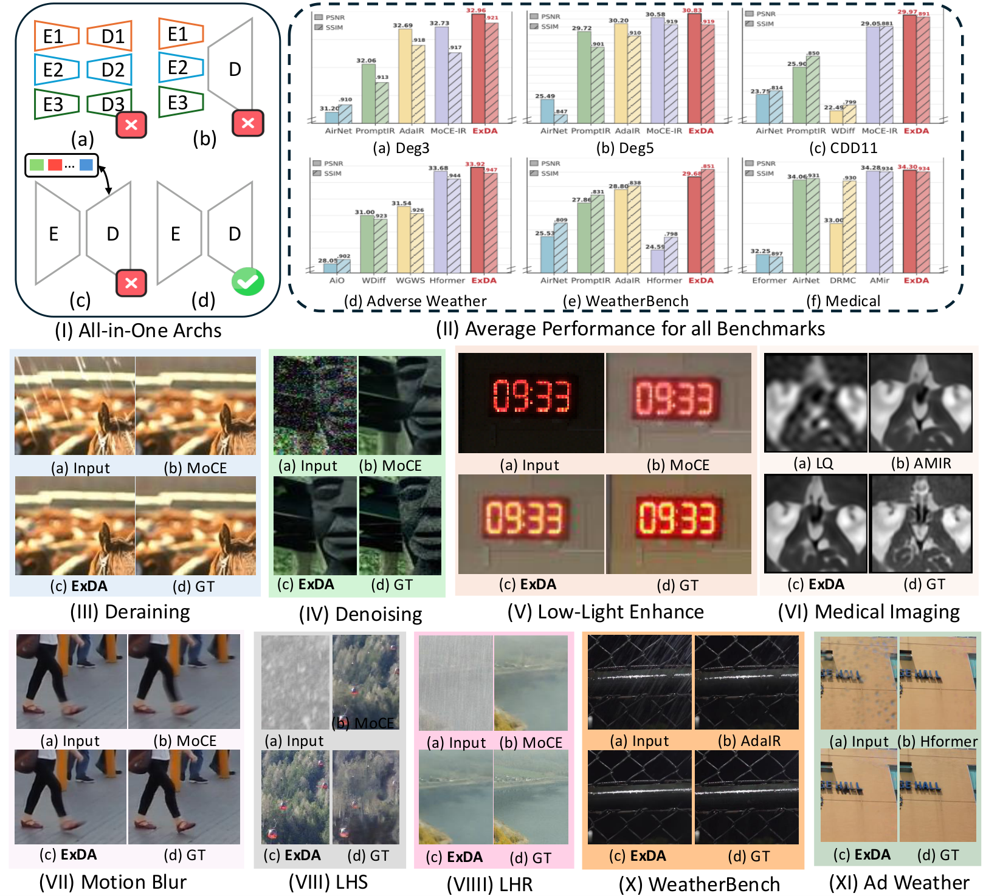
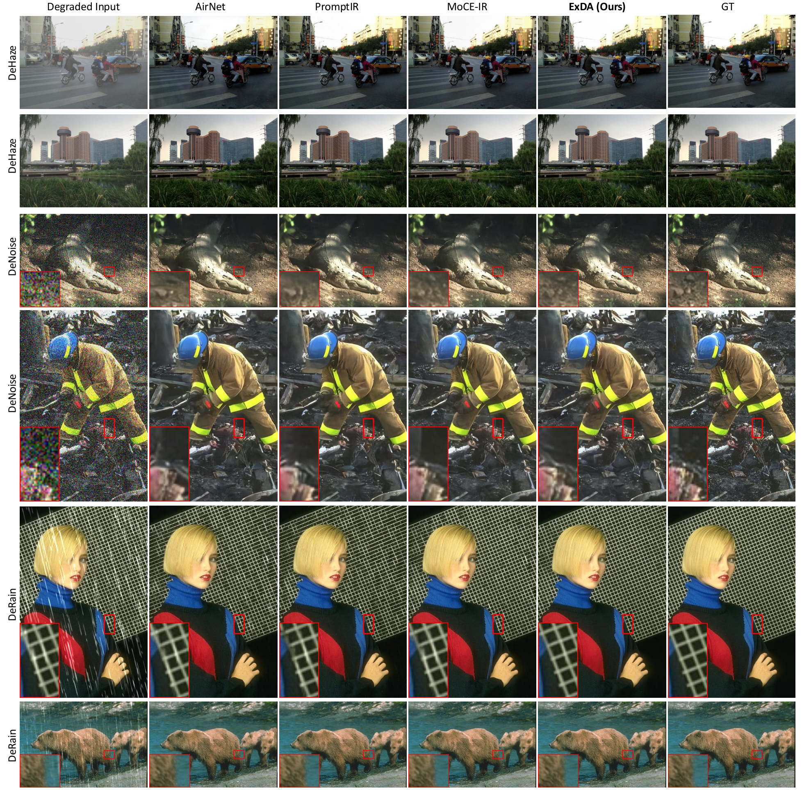
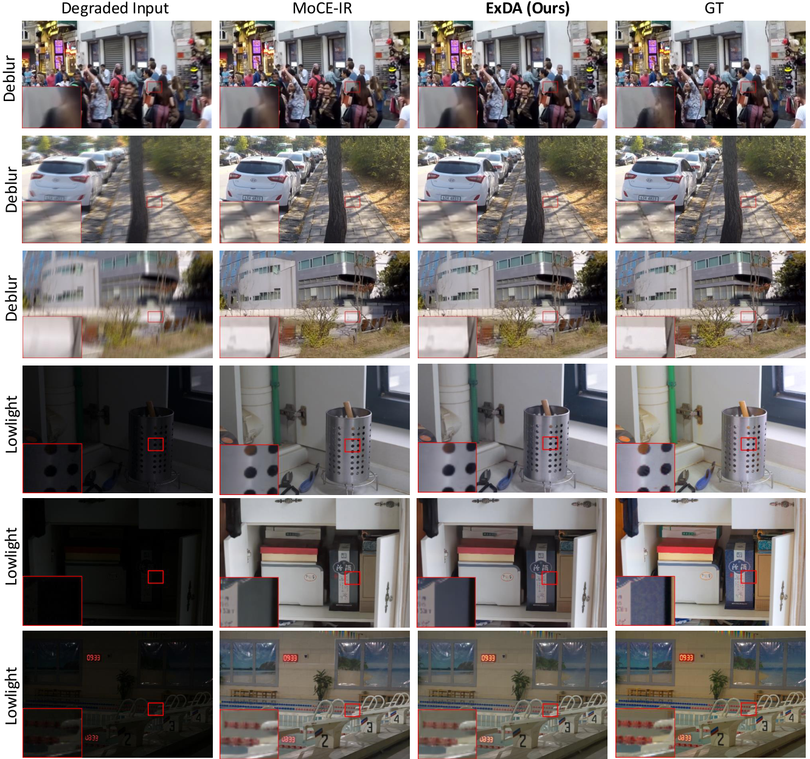
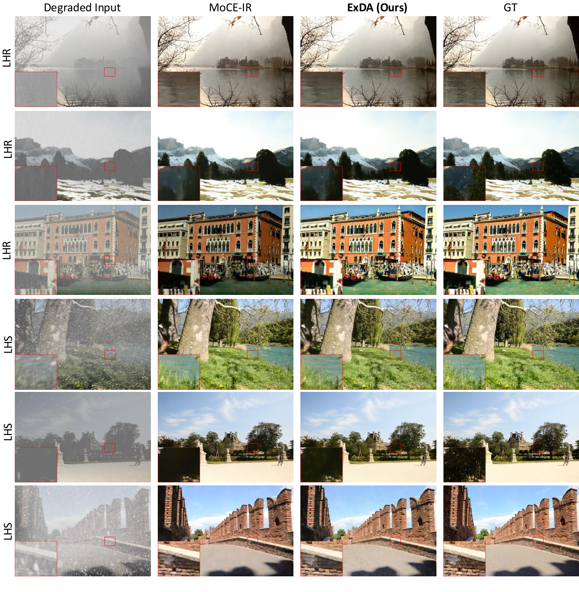
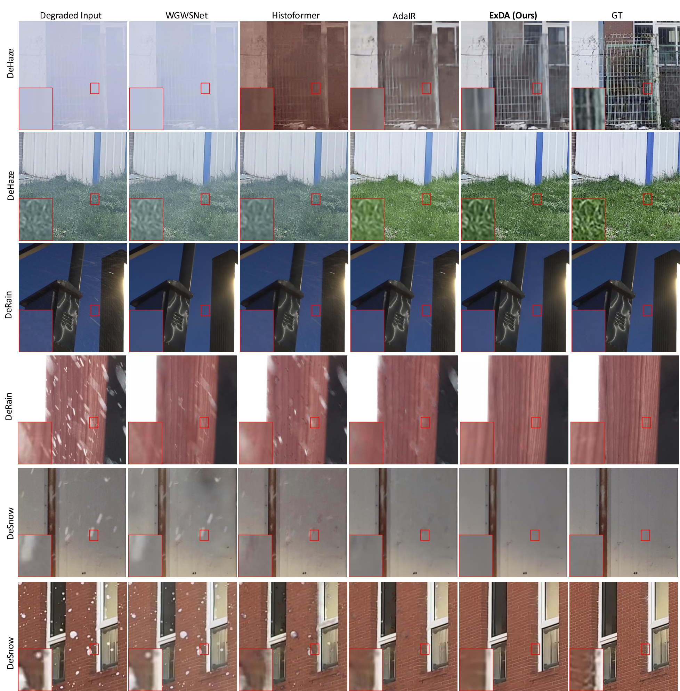
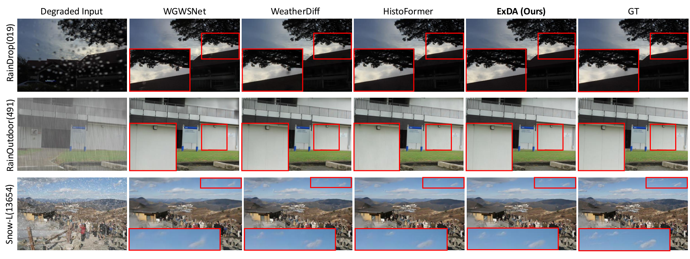
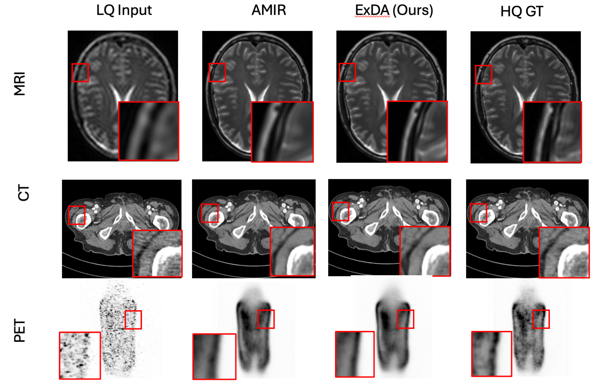

Motivation

Why ExDA: all-in-one restoration forces a single backbone to approximate many inverse problems. ExDA revisits attention design to better capture degradation-dependent cues and improve expressivity without sacrificing stability.

Qualitative overview across diverse restoration settings. ExDA improves blind all-in-one restoration results under heterogeneous degradations, consistently recovering sharper structures and cleaner textures while avoiding over-smoothing. Red boxes highlight challenging regions.
All-in-one image restoration (IR) aims to recover high-quality images from di- verse degradations, which in real-world settings are often mixed and unknown. Unlike single-task IR, this problem requires a model to approximate a family of heterogeneous inverse functions, making it fundamentally more challenging and practically important. Although recent focus has shifted toward large multimodal models, their robustness still depends on faithful low-level inputs, and the princi- ples that govern effective restoration remain underexplored. We revisit attention mechanisms through the lens of all-in-one IR and identify two overlooked bottle- necks in widely adopted Restormer-style backbones: (i) the value path remains 1 Published as a conference paper at ICLR 2026 purely linear, restricting outputs to the span of inputs and weakening expressivity, and (ii) the absence of an explicit global slot prevents attention from encoding degradation context. To address these issues, we propose two minimal, backbone- agnostic primitives: a nonlinear value transform that upgrades attention from a selector to a selector–transformer, and a global spatial token that provides an ex- plicit degradation-aware slot. Together, these additions improve restoration across synthetic, mixed, underwater, and medical benchmarks, with negligible overhead and consistent performance gains. Analyses with foundation model embeddings, spectral statistics, and separability measures further clarify their roles, positioning our study as a step toward rethinking attention primitives for robust all-in-one IR. Project page is at https://amazingren.github.io/projects/ExDA/.
Why ExDA: all-in-one restoration forces a single backbone to approximate many inverse problems. ExDA revisits attention design to better capture degradation-dependent cues and improve expressivity without sacrificing stability.

ExDA architecture. Multi-scale encoder-decoder with ExDA blocks. Each block enhances attention by improving (i) expressivity in the value pathway and (ii) degradation awareness through adaptive token operations, enabling robust restoration under mixed and unknown corruptions.

All-in-one restoration benchmarks. Comparisons against representative all-in-one architectures and strong task-specific baselines across dehazing, denoising, deraining, low-light enhancement, motion blur, and adverse weather. ExDA generally restores finer details and reduces artifacts (see zoomed patches).

LHR / LHS settings. Under harder, mixed or long-tail degradations, ExDA keeps edges crisp and textures coherent, improving perceptual quality while tracking the ground truth appearance more closely.

All-in-one comparisons with AirNet / PromptIR / MoCE-IR. ExDA avoids under-restoration and suppresses residual noise or streaking artifacts, especially in high-frequency regions.

Adverse weather (dehaze/derain/desnow). ExDA better recovers scene contrast and structure, with fewer color shifts and less haloing than prior methods.

WeatherBench-style conditions. ExDA improves visibility and texture fidelity for rain/snow-related corruptions, maintaining natural tones and reducing blotchy artifacts in flat regions.

Additional adverse weather comparisons. ExDA shows clearer boundaries and more stable global illumination, particularly in challenging low-contrast areas highlighted by red boxes.

Medical imaging (MRI/CT/PET). ExDA improves anatomical edge definition and suppresses noise while preserving clinically relevant contrast. Left-to-right comparisons follow the panel labels in the figure (LQ/AMIR/ExDA/HQ or GT).
@inproceedings{ren2026exda,
title = {ExDA: Rethinking Expressivity and Degradation-Awareness in Attention for All-in-One Blind Image Restoration},
author = {Bin Ren and Runyi Yang and Qi Ma and Xu Zheng and Mengyuan Liu and Danda Pani Paudel and Luc Van Gool and Rita Cucchiara and Nicu Sebe},
booktitle = {International Conference on Learning Representations (ICLR)},
year = {2026},
url = {https://openreview.net/forum?id=IBzmQVia88}
}